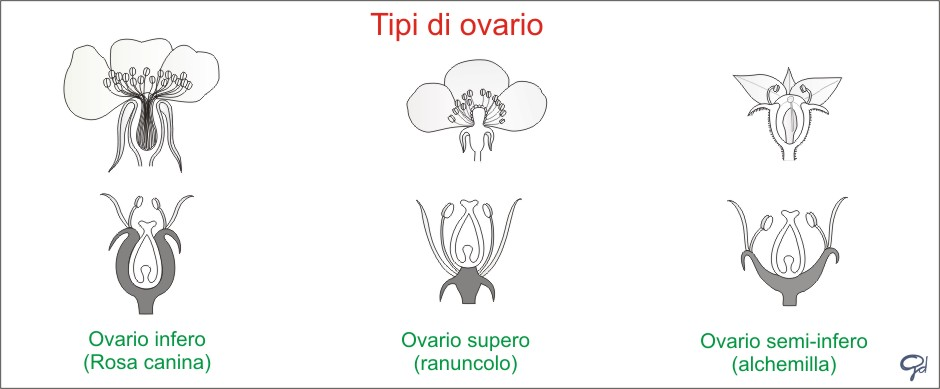

Maturazione, ormoni della crescita e climaterio
La fruttificazione, così come tutta la vita della pianta, è regolata dagli ormoni della crescita quali le auxine, le giberelline, la citochinina e l'etilene e l'acido abscissico.
Un fiore impollinato e fecondato è in grado di produrre un frutto, solo se auxina e giberellina stimolano le cellule dell'ovario a moltiplicarsi e ad ingrandirsi, fino ad arrivare alla maturazione che è un fenomeno di origine ormonale regolato dal climaterio.
Nelle piante chiamate climateriche (mele, pere, pomodori ecc.) la maturazione del frutto avviene in tempi brevi per effetto del climaterio che determina un aumento repentino dell’attività respiratoria e del consumo di ossigeno, mentre in altre non climateriche la maturazione avviene in mopdo lento e graduale (fragole, uva, arance ecc.).
Anche altri fenomeni concorrono alla maturazione, ad esempio nei frutti carnosi si osserva un aumento della sintesi di pigmenti coloranti a scapito di una diminuzione della clorofilla per rendere il frutto più appariscente, una trasformazione delle pectine dei tessuti che rendono la polpa più morbida e la saccarificazione degli amidi che la rendono più grata al palato.
Gli elementi che partecipano alla fruttificazione: il gineceo
Il gineceo è la parte femminile del fiore che è composto da uno o più pistilli che a loro volta costituiscono l'ovario (la parte inferiore ingrossata che contiene gli ovuli) e dallo stilo che riceve il polline dalla sua parte terminale, lo stimma.
Per capire la formazione del frutto è importante conoscere la posizione dell'ovario che è:
|
|
Supero se è inserito sopra gli elementi della corolla
|
|
|
Infero saldato al ricettacolo se inserito sotto gli elementi della corolla ed è saldato al ricettacolo
|
|
|
Infero libero se inserito sotto gli elementi della corolla ma non saldato al ricettacolo
|
|
|
Infero libero con più ovari
|
|
|
Mezzo infero saldato
|
L'ovario presenta una o più cavità formate da uno o più carpelli (originati da foglie fertili trasformate) saldati fra di loro, all'interno delle quali sono custoditi gli ovuli che si sviluppano in semi. Il modo in cui sono saldati i carpelli determina la posizione degli ovuli che sono fissati su un tessuto particolare chiamato placenta.

Pericarpio, clamidocarpo e induvie
Normalmente l'ovario supero partecipa da solo alla formazione del frutto e in questo caso la porzione extracarpellare prende il nome di
clamidocarpo. In un certo numero di specie, con ovario infero altre parti del fiore o dell'infiorescenza si associano e si sviluppano col gineceo originando falsi frutti. Quando le parti del fiore che persistono nel frutto non sono con esso concrescenti e intimamente unite ad esso si chiamano
induvie (è il caso delle ali delle samare, del pappo di certi acheni, della cupola delle ghiande, del cardo delle castagne ecc.) mentre la parte del frutto che deriva dal pistillo nudo (senza strutture accessorie) è chiamata
pericarpio.
La trasformazione degli elementi fiorali nella fruttificazione:
Durante la fruttificazione i petali si separano rapidamente dal fiore al contrario dei sepali che spesso restano al loro posto. Gli
stami appassiscono o cascano, ma possono anche persistere più o meno a lungo attorno al frutto. Il
ricettacolo può diventare carnoso come nella fragola (Fragaria vesca), avvolgente e edule come nella mela ( Malus domestica ). Il
calice può accompagnare il frutto nel suo sviluppo come in Physalis alkekengi dove accrescendo forma un involucro rigonfio. Le
brattee involucrali possono fondersi a formare la parte del frutto come la cupola della ghianda (Quercus robur)
Anche il
peduncolo fiorale può diventare un frutto come succede nel commestibile pomo d'anacardio (Anacardium occidentale) .